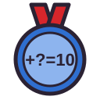
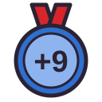
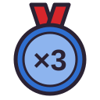
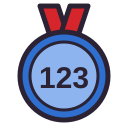
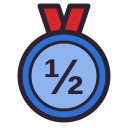
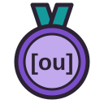
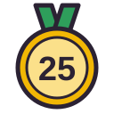

Badges — planche de contrôle

Champion des compléments à 10As des additionsRoi des soustractions
Pro du + 9Maître des tables de 2, 5 et 10
Maître des tables de 3 et 4
Explorateur des nombres
Expert des fractionsDétective des problèmes
Oreille d’orChampion des voyellesChasseur de lettres muettesAs du plurielGardien des motsPremier tour de piste10 séries terminées
25 séries terminées10 séries sans faute7 jours d’entraînementObjectif tenu 5 jours de suiteLecteur assidu30 étoilesNiveau 5